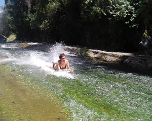
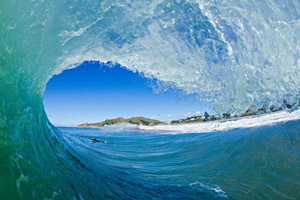
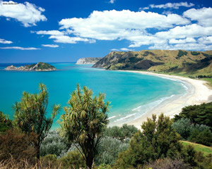
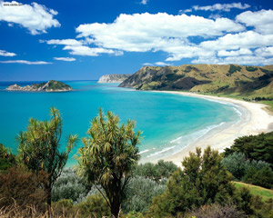

Also known as "Tairawhiti" - the light shines on the water - Gisborne is the first city in the world to see the sunrise of each new day.
A tourist hotspot as Gisborne and the surrounding areas is home to some of the best surf spots in New Zealand. If yo are a surfer, you would have heard of Gisborne before as it offers some world class beach breaks. There is a Harbour and rivers running through the city which add to the already water based atmosphere that makes this place so special.
There are great accommodation options and even free camping for all vehicle types parked right alongside the Turanganui river in the center of town. Take a look at campermate for directions
There are many restaurants and bars in the city with a good nightlife over weekends and a wine culture as Gisborne is home to some of the worlds finest wines.
The region is home to around 45,000 people and is around 3 hours from Tauranga and Rotorua and 2.5 hours from Napier.
- Free camping - Yes
- Fire friendly - No
- Free wifi spots - Yes
- Explorability - High
- Supermarkets - Yes
 
 
